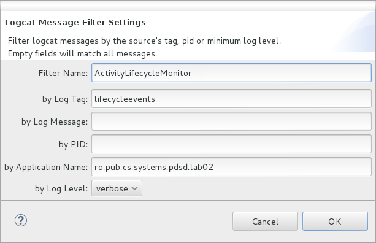
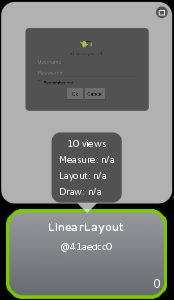
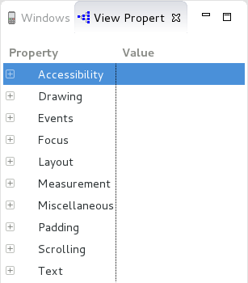
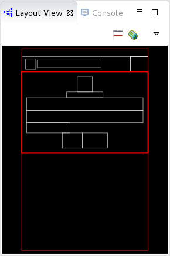

Table of Contents
Laborator 02. Structura unei Aplicații (I)
O aplicație Android poate conține mai multe componente:
- contextul reprezintă punctul central al unei aplicații Android, oferind acces către mai multe funcționalități ale acesteia (inclusiv la resursele dizpozitivului mobil, serviciile sistemului de operare, diferite fișiere de configurare); este instanțiat sub forma unui obiect de tip
android.app.Application; - activitatea realizează sarcini a căror execuție nu influențează timpul de răspuns al aplicației Android, astfel încât să nu aibă un impact asupra experienței utilizatorului; de aceea, este asociată unei ferestre (interfețe grafice), o aplicație Android fiind formată din una sau mai multe activități;
- fragmentul conține interfața grafică și logica aplicației corespunzătoare unei părți din cadrul unei activități; motivul pentru care se recurge la modularizarea unei activități prin intermediul a mai multor fragmente este asigurarea consistenței și flexibilității aplicației Android pe mai multe echipamente mobile, cu dispozitive de afișare de dimensiuni și rezoluții diferite;
- serviciul încapsulează procese mai complexe, executate în fundal (și posibil la intervale de timp regulate) a căror rulare durează o perioadă de timp semnificativă, astfel încât să nu poată fi plasate în cadrul aceluiași fir de execuție ca și interfața grafică prin care se asigură interacțiunea cu utilizatorul;
- intenția este mecanismul de comunicare între elementele unei aplicații Android (activități și servicii); prin intermediul unui sistem de mesagerie (asincronă), sistemul de operare Android mapează o solicitare (împachetată sub forma unei intenții) către componenta adecvată.

Contextul
Contexul este utilizat pentru a implementa diferite funcționalități la nivelul întregii aplicații:
- obținerea de referințe la resursele aplicației (șiruri de caractere, elemente grafice, fișiere XML);
- accesarea preferințelor aplicației;
- gestiunea sistemului de fișiere corespunzător aplicației;
- lucrul cu resurse necompilate ale aplicației;
- utilizarea serviciilor de sistem;
- folosirea unei baza de date SQLite;
- administrarea permisiunilor aplicației.
În clasele de tip Activity sau Service, contextul aplicației poate fi obținut printr-un apel de forma:
Context context = getApplicationContext(); // definita in clasa Context
Context context = getApplication(); // definita in clasa Activity
Activitatea
Activitatea reprezintă o componenta a aplicației Android ce oferă o interfață grafică cu care utilizatorul poate să interacționeze. Cele mai multe activități ocupă întreaga suprafață de afișare, însă acest lucru nu este obligatoriu.
O aplicație Android este formată din una sau mai multe activități (slab cuplate între ele). Există întotdeauna o activitate principală care este afișată atunci când aplicația Android este lansată în execuție inițial.
O activitate poate invoca o altă activitate pentru a realiza diferite sarcini, prin intermediul unei intenții. În acest moment, activitatea veche este oprită și salvată pe stivă (eng. back stack), după care este pornită activitatea nouă. Restaurarea și (re)începerea activității vechi este realizată în momentul în care activitatea nouă (curentă) este terminată. Un comportament similar are loc în momentul în care se produce un eveniment (primirea unui apel telefonic, apăsarea tastelor Home sau Back, lansarea altei aplicații).
Componentele unei Activități
O activitate poate fi utilizată numai dacă este definită în fișierul AndroidManifest.xml, în cadrul elementului de tip <application>. Pentru fiecare activitate trebuie creată o intrare de tip <activity> pentru care se specifică diferite atribute, dintre care obligatoriu este numai denumirea activității (android:name). Din momentul în care aplicația Android este publicată, conținutul manifestului devine un contract față de utilizatori, iar denumirile componentelor nu mai pot fi modificate întrucât pot genera erori în cazul producerii unor actualizări.
Pentru o activitate se poate specifica și un filtru de intenții, în cadrul elementului <intent-filter>, spre a indica modul în care componentele aplicației o pot accesa. Acesta este necesar pentru ca activitatea să poată fi rulată folosind intenții implicite (furnizate de alte aplicații). Așadar, o astfel de intrare va fi necesară pentru fiecare tip de intenție, precizând elementele <action> și opțional <category> / <data>. În cazul activităților care nu vor fi accesibile din cadrul altor aplicații Android, nu este necesară definirea unui filtru de intenții.
- acțiunea are valoarea
android.intent.action.MAIN, întrucât reprezintă punctul de intrare al aplicației Android; - categoria are valoarea
android.intent.category.LAUNCHER, întrucât activitatea trebuie inclusă în meniul dispozitivului mobil pentru a putea fi lansată în execuție.
- AndroidManifest.xml
<?xml version="1.0" encoding="utf-8"?> <manifest ... > <!-- ... --> <application ... > <activity android:name=".LifecycleMonitorActivity" android:label="@string/app_name" > <intent-filter> <action android:name="android.intent.action.MAIN" /> <category android:name="android.intent.category.LAUNCHER" /> </intent-filter> </activity> </application> </manifest>
Ulterior, se va implementa și clasa identificată prin denumirea activității. Aceasta trebuie să fie derivată din android.app.Activity și să implementeze cel puțin metoda onCreate() în care sunt inițializate componentele sale.
- LifecycleMonitorActivity.java
public class LifecycleMonitorActivity extends Activity { @Override protected void onCreate(Bundle savedInstanceState) { super.onCreate(savedInstanceState); setContentView(R.layout.activity_lifecycle_monitor); // ... } // ... }
Este obligatoriu ca metoda onCreate() să apeleze metoda părinte, în caz contrar generându-se o excepție.
Pentru fiecare activitate, este necesar să se descrie interfața grafică în cadrul unui fișier .xml (încărcat manual, în cadrul metodei onCreate(), printr-un apel al metodei setContentView()) în care elementul părinte este un mecanism de dispunere a conținutului (derivat din clasa android.view.ViewGroup). Acest fișier este plasat în directorul res/layout și conține referințe către toate obiectele care vor fi afișate în cadrul ferestrei. În urma compilării, vor fi generate niște referințe (adrese în cadrul pachetului de resurse) prin intermediul cărora resursele vor putea fi accesate.
- activity_lifecycle_monitor.xml
<LinearLayout xmlns:android="http://schemas.android.com/apk/res/android" xmlns:tools="http://schemas.android.com/tools" android:layout_width="match_parent" android:layout_height="wrap_content" android:paddingBottom="@dimen/activity_vertical_margin" android:paddingLeft="@dimen/activity_horizontal_margin" android:paddingRight="@dimen/activity_horizontal_margin" android:paddingTop="@dimen/activity_vertical_margin" android:orientation="vertical" tools:context="ro.pub.cs.systems.pdsd.lab02.graphicuserinterface.LifecycleMonitorActivity" > <!-- ... --> </LinearLayout>
Prin urmare, componentele definitorii ale unei activități sunt clasa în care este implementat comportamentul în urma interacțiunii cu utilizatorul și fișierul .xml care descrie modelul static al interfeței grafice.

O activitate poate fi pornită în mod explicit prin intermediul metodei startActivity() care primește ca parametru un obiect de tip intenție (căruia i se pot atașa și niște date, transferate activității). În cazul în care se așteaptă ca activitatea să producă unele rezultate, se va apela metoda startActivityForResult() - furnizându-se și un cod de cerere -, fiind necesar ca activitatea astfel invocată să implementeze metoda onActivityResult().
O activitate poate fi oprită în mod explicit prin intermediul metodei finish(). De regulă, folosirea unei astfel de metode este descurajată, datorită impactului pe care îl poate avea asupra experienței utilizatorului.
Ciclul de Viață al unei Activități
Din momentul în care activitatea este creată și până la momentul în care este distrusă, ea trece printr-o serie de etape, cunoscute sub denumirea de ciclul de viață al activității:
- în execuție (eng. running) - activitatea se află în prim plan și este vizibilă, astfel încât utilizatorul poate interacționa cu aceasta prin intermediul interfeței grafice pe care o oferă;
- întreruptă temporar (eng. paused) - activitatea se află în fundal și este (parțial) vizibilă; o astfel de situație este întâlnită în momentul în care o altă activitate a fost pornită, însă interfața sa grafică este transparentă sau nu ocupă întreaga suprafață a dispozitivului de afișare; în acest caz, activitatea este încă activă în sensul că obiectul de tip
Activityeste stocat în memorie, fiind atașată în continuare procesului responsabil cu gestiunea ferestrelor și menținându-se starea tuturor componentelor sale; totuși, ea poate fi distrusă de sistemul de operare dacă necesarul de memorie disponibilă nu poate fi întrunit din cauza sa; - oprită (eng. stopped) - activitatea se află în fundal și este complet ascunsă; o astfel de situație este întâlnită în momentul în care o altă activitate a fost pornită, iar interfața sa grafică ocupă întreaga suprafață a dispozitivului de afișare; și în acest caz, activitatea este activă în sensul că obiectul de tip
Activityfiind stocat în memorie, menținându-se starea tuturor componentelor sale, dar detașându-se de procesul responsabil cu gestiunea ferestrelor; ea poate fi distrusă de sistemul de operare dacă necesarul de memorie disponibilă nu poate fi întrunit din cauza sa; - inexistentă - activitatea a fost terminată sau distrusă de sistemul de operare, rularea sa impunând crearea tuturor componentelor sale ca și când ar fi accesată inițial.

Tranziția unei activități dintr-o stare în alta este notificată prin intermediul unor metode (eng. callbacks), care pot fi suprascrise pentru a realiza diferite operații necesare pentru gestiunea memoriei, asigurarea persistenței informațiilor și a consistenței aplicației Android în situația producerii de diferite evenimente:
onCreate(Bundle)- apelată în momentul în care activitatea este creată; această metodă va fi folosită pentru inițializări statice:- încărcarea interfeței grafice printr-un apel al metodei
setContentView(int)(al cărei parametru reprezintă referința către resursa de tip.xmlcare descrie interfața grafică); - obținerea de referințe către componentele interfeței grafice printr-un apel al metodei
findViewById(int)(al cărei parametru reprezintă referința către componenta respectivă - eng. widget - așa cum apare în resurse); - indicarea unor obiecte de tip ascultător care să gestioneze evenimentele legate de interacțiunea cu utilizatorul;
- realizarea unor conexiuni către alte modele de date.
onCreate() este întotdeauna urmată de metoda onStart().
onRestart()- apelată atunci când activitatea a fost oprită și ulterior repornită; este urmată întotdeauna de metodaonStart();onStart()- apelată înainte ca activitatea să apară pe ecran; poate fi urmată de metodaonResume()dacă activitatea trece în prim-plan sau de metodaonPause()dacă activitatea trece în fundal;onResume()- apelată înainte ca activitatea să interacționeze cu utilizatorul; această metodă va fi folosită pentru a porni servicii sau cod care trebuie să ruleze atâta timp cât aplicația este afișată pe ecran; este urmată întotdeauna de metodaonPause();onPause()- apelată înainte ca activitatea să fie întreruptă temporar, iar o altă activitate să fie reluată; această metodă va fi utilizată pentru a opri servicii sau cod care nu trebuie să ruleze atâta timp cât activitatea se află în fundal (întrucât consumă timp de procesor) și pentru a salva starea diferitelor componente în vederea asigurării persistenței și a consistenței aplicației înainte și după evenimentul care a produs suspendarea sa; poate fi urmată de metodaonResume()dacă activitatea trece în prim-plan sau de metodaonStop()dacă activitatea este ascunsă;
onPause() nu trebuie să ocupe un interval de timp prea mare întrucât în caz contrar ar bloca noua activitate care urmează să fie lansată în execuție.
onPause(), aceasta fiind singura metodă care este apelată în mod garantat înainte de a se solicita memoria pe care activitatea o folosește.
onStop()- apelată în momentul în care activitatea este ascunsă, fie din cauză că urmează să fie distrusă, fie din cauză că o altă activitate, a cărei interfață grafică ocupă întreaga suprafață a dispozitivului de afișare, urmează să devină vizibilă; poate fi urmată de metodaonRestart(), dacă activitatea urmează să interacționeze (din nou) cu utilizatorul, sau de metodaonDestroy()dacă activitatea urmează să fie terminată sau distrusă de sistemul de operare;onDestroy()- apelată înainte ca activitatea să se termine sau să fie distrusă de către sistemul de operare (fie manual, fie automat) din lipsă de memorie; această metodă va fi utilizată pentru a elibera resursele ocupate.
isFinishing().

onCreate(), este necesar ca acest lucru să fie realizat la începutul metodei.
- LifecycleMonitorActivity.java
public class LifecycleMonitorActivity extends Activity { @Override protected void onCreate(Bundle savedInstanceState) { super.onCreate(savedInstanceState); // ... } @Override protected void onStart() { super.onStart(); // ... } @Override protected void onResume() { super.onResume(); // ... } @Override protected void onPause() { super.onPause(); // ... } @Override protected void onStop() { super.onStop(); // ... } @Override protected void onDestroy() { super.onDestroy(); // ... } @Override protected void onRestart() { super.onRestart(); // ... } // metode folosite pentru salvarea si restaurarea starii @Override protected void onSaveInstanceState(Bundle savedInstanceState) { // apelarea metodei din activitatea parinte este recomandata, dar nu obligatorie super.onSaveInstanceState(savedInstanceState); // ... } @Override protected void onRestoreInstanceState(Bundle savedInstanceState) { // apelarea metodei din activitatea parinte este recomandata, dar nu obligatorie super.onRestoreInstanceState(savedInstanceState); // ... } }
Gestiunea Stării unei Activități
Unele dintre metodele care gestionează ciclul de viață al unei activități primesc ca parametru un obiect de tip Bundle, utilizat pentru gestiunea stării în cazul în care activitatea este distrusă din lipsă de memorie:
onCreate()- parametrulsavedInstancepoate să fienull, daca activitatea nu a mai fost rulată anterior, fie este o instanță a unui obiect de tipBundleîn care se găsește starea anterioară (așa cum a fost reținută de metodaonSaveInstanceState());onSaveInstanceState()- este apelată când activitatea urmează să fie ascunsă și există posibilitatea ca procesul acesteia să fie terminat din lipsă de memorie, pentru a salva starea activității;onRestoreInstanceState()- este apelată doar dacă există o stare a activității care ar trebui să fie restaurată.

Obiectul de tip Bundle este o formă de hash map, în care cheia este întotdeauna de tip String, iar valorile au tipul android.os.Parcelable (asemănător cu Serializable din Java, deși acesta nu este un mecanism de serializare în sine). Astfel, tipurile de date care pot fi salvate și încărcate prin intermediul unui obiect de tip Bundle sunt:
boolean | boolean[] | |
Bundle |
||
byte | byte[] | |
char | char[] | |
CharSequence | CharSequence[] | ArrayList<CharSequence> |
double | double[] | |
float | float[] | |
int | int[] | ArrayList<Integer> |
long | long[] | |
Serializable |
||
short | short[] | |
SparseArray |
||
String | String[] | ArrayList<String> |
Starea unei activități este menținută atâta vreme cât ea este activă (deci inclusiv când au fost apelate metodele onPause() și onStop()), aceasta putând fi restaurată corespunzător. Necesitatea asigurării consistenței activității de către programator apare în momentul în care activitatea este terminată/distrusă și apoi (re)pornită. O astfel de situație este frecventă în cazul în care se produce o schimbare de configurație (se modifică orientarea dispozitivului de afișare - portrait vs. landscape, limba, disponibilitatea tastaturii), întrucât de fiecare dată este necesar să se (re)încarce resursele specifice pentru valorile respective.
Ținându-se cont de faptul că activitatea poate fi terminată/distrusă în orice moment după ce nu se mai găsește în prim-plan / este ascunsă, asigurarea consistenței trebuie realizată de fiecare dată.
Salvarea Stării
Metoda onSaveInstanceState() este înainte de metoda onStop() și posibil înainte de metoda onPause(), deși acest lucru nu este garantat. Ea primește ca parametru un obiect de tip Bundle în care vor fi plasate datele din cadrul activității care se doresc a fi salvate, acestea putând fi identificate prin intermediul unei chei (de tip String).
onSaveInstanceState() nu este garantat să fie realizat de fiecare dată întrucât pot fi situații în care nu este necesar ca starea activității să fie restaurată (utilizatorul a terminat activitatea prin apăsarea butonului Back).
În cazul în care se dorește salvarea explicită a conținutului unui obiect EditText, se poate proceda astfel:
@Override protected void onSaveInstanceState(Bundle savedInstanceState) { super.onSaveInstanceState(savedInstanceState); EditText usernameEditText = (EditText)findViewById(R.id.username_edit_text); savedInstanceState.putString(Constants.USERNAME_EDIT_TEXT, usernameEditText.getText()); }
Valoarea introdusă de utilizator va fi salvată în obiectul de tip Bundle sub denumirea userNameEditText, acesta fiind menținut și prin urmare utilizat între mai multe instanțe ale acestei activități.
Apelarea metodei părinte este necesară întrucât API-ul Android furnizează o implementare implicită pentru salvarea stării unei activități, parcurgând ierarhia de componente grafice (obiecte de tip View) care au asociat un identificator (android:id), folosit drept cheie în obiectul Bundle. Astfel, de regulă, pentru elementele interfeței grafice, nu este necesar să se mențină starea, acest lucru fiind realizat în mod automat, cu respectarea condiției menționate. De aceea, în metoda onSaveInstanceState, va fi realizată salvarea unor informații (obiecte ale clasei) pentru care procesul de salvare a stării nu este apelat. Totuși, asigurarea persistenței datelor nu se va realiza niciodată aici (întrucât nu se garantează apelarea sa), ci în metoda onPause().
În obiectul de tip Bundle, prin cheia android:viewHierarchyState se va reține un alt obiect de tip Bundle care reține starea tuturor obiectelor de tip View din cadrul activității (care sunt identificate prin intermediul unui câmp android:id). În cadrul acestuia, prin cheia android:views se reține un obiect de tip SparseArray (un tip de dată specific Android care realizează mapări între întregi și obiecte, mai eficient decât un hashmap) care conține starea fiecărui obiect de tip View prin intermediul identificatorului său.
Bundle viewHierarchy = savedInstanceState.getBundle("android:viewHierarchyState"); if (viewHierarchy != null) { SparseArray<? extends Parcelable> views = viewHierarchy.getSparseParcelableArray("android:views"); for (int k=0; k < views.size(); k++) { Log.d(Constants.TAG, views.get(k) + "->" + views.valueAt(k)); } } else { Log.d(Constants.TAG, "No view information was saved!"); }
Prin urmare, dacă aplicația este oprită și apoi pornită din nou, obiectele de tip View vor avea conținutul existent în prealabil. Pentru a dezactiva această opțiune, trebuie specificată în fișierul .xml care descrie interfața grafică a activității, în elementul corespunzător obiectului de tip View proprietatea android:saveEnabled=“false”.
setSaveEnabled(boolean).
Restaurarea Stării
Încărcarea conținutului din obiectul de tip Bundle (în vederea restaurării stării) poate fi realizată:
- în metoda
onCreate()
@Override protected void onCreate(Bundle savedInstanceState) { super.onCreate(savedInstanceState); setContentView(R.layout.activity_lifecycle_monitor); EditText usernameEditText = (EditText)findViewById(R.id.username_edit_text); if ((savedInstanceState != null) && (savedInstanceState.getString(Constants.USERNAME_EDIT_TEXT) != null)) { usernameEditText.setText(bundle.getString(Constants.USERNAME_EDIT_TEXT)); } }
- prin intermediul metodei
onRestoreInstanceState(), apelată în mod automat între metodeleonStart()șionResume(); această abordare permite separarea dintre codul folosit la crearea ferestrei și codul utilizat la restaurarea stării unei ferestre
@Override protected void onRestoreInstanceState(Bundle savedInstanceState) { super.onRestoreInstanceState(bundle); EditText usernameEditText= (EditText)findViewById(R.id.username_edit_text); if (savedInstanceState.getString(Constants.USERNAME_EDIT_TEXT) != null) { usernameEditText.setText(savedInstanceState.getString(Constants.USERNAME_EDIT_TEXT)); } }
Coordonarea Activităților
În situația în care o activitate nouă este pornită în timp ce o activitate veche este în execuție, fiind necesară transmiterea de informații dintre acestea, este util să se cunoască ordinea în care sunt apelate metodele care gestionează ciclul de viață al celor două activități, astfel încât comunicarea dintre acestea să se realizeze în mod corect:
- se apelează metoda
onPause()a activității vechi - aici trebuie realizată partea de scriere a informațiilor care trebuie să fie trimise; - se apelează metodele
onCreate(),onStart()șionResume()ale activității noi - aici trebuie realizată partea de citire a informațiilor care trebuie să fie primite; - se apelează metoda
onStop()a activității vechi; - în situația în care necesarul de memorie nu este satisfăcut, este posibil să se apeleze metoda
onDestroy()a activității vechi.

Structura unui Proiect Android în Eclipse Luna SR1a (4.4.1)
Structura unui proiect Android în mediul integrat de dezvoltare Eclipse Luna SR1a (4.4.1) poate fi observată în fereastra Package Explorer.

- biblioteca Android 4.1.2 (Google APIs) - conține mai multe fișiere:
android.jar- cuprinde toate clasele necesare pentru aplicația Android;usb.jar- încapsulează clase necesare instalării aplicației Android prin USB și comunicării cu dispozitivul fizic;effects.jar- utilizată pentru aplicarea de diferite efecte;maps.jar- folosită de aplicațiile Android care implementează funcționalități legate de localizare.
- Android Private Libraries conține un singur fișier
android-support-v4.jar; - src - conține sursele
.javaale proiectului, organizate pe pachete. În exemplu, codul este organizat pe trei pachete, cea mai importanta clasa fiindLifecycleMonitorActivity.java(în pachetulro.pub.cs.systems.pdsd.lab02.graphicuserinterface) continand activitatea principala a aplicației Android. - gen - cuprinde fișiere generate:
BuildConfig.java- definește unele proprietăți ale aplicației (cum ar fi activarea sau nu a modului de depanare);R.java- include identificatori către toate resursele din cadrul proiectului, prin intermediul cărora pot fi obținute referințe către acestea; conține subclasele:attr- diferite atribute;color- culorile utilizate ca fundal pentru diferite componente grafice afișate în cadrul activităților din cadrul aplicației;dimen- dimensiunile dispozitivului de afișare, pentru fiecare configurație suportată de aplicație;drawable- resurse de tip grafic, utilizate în cadrul aplicației;id- identificatori pentru toate resursele care pot fi referite prin intermediul unui câmp de tipulandroid:id;layout- mecanisme de dispunere a conținutului aferente activităților (interfețelor grafice), pentru fiecare configurație suportată de aplicație;menu- diferitele meniuri atașate activităților (interfețelor grafice) din cadrul aplicației;string- șirurile de caractere definite în cadrul aplicației;style- stilurile (temele) folosite în cadrul aplicației.
gen.În cazul în care fișierul
R.java este șters manual, acesta va fi imediat generat de către mediul de dezvoltare, cu condiția ca proiectul să nu conțină erori (erori de sintaxă în cazul codului sursă sau documente XML care nu sunt bine formate).
- assets - cuprinde toate activele utilizate de aplicație (fișiere text, pagini HTML, baze de date), acestea fiind necompilate;
- bin - include fișierele construite de ADT în timpul procesului de generare, mai ales fișierul
.apk(Android Package), un binar care conține toate resursele necesare pentru a rula o aplicație Android; - libs - cuprinde toate bibliotecile necesare pentru compilarea și rularea proiectului;
- res - deține toate resursele folosite în cadrul aplicației
drawable-<resolution>: imaginile utilizate in aplicație, în funcție de rezoluție (ldpi, mdpi, hdpi, xhdpi, xxhdpi)layout: fișierulactivity_lifecycle_monitor.xmlcare descrie modul de dispunere a elementelor grafice în cadrul interfaței cu utilizatorul, separată de codul programului (de asemenea, sunt conținute și fișierele care descriu mecanismele de dispunere pentru ferestrele care indică rezultatul operației de autentificare:popup_window_authentication_success.xmlșipopup_window_authentication_fail.xml);
- activity_lifecycle_monitor.xml
<LinearLayout xmlns:android="http://schemas.android.com/apk/res/android" xmlns:tools="http://schemas.android.com/tools" android:layout_width="match_parent" android:layout_height="wrap_content" android:paddingBottom="@dimen/activity_vertical_margin" android:paddingLeft="@dimen/activity_horizontal_margin" android:paddingRight="@dimen/activity_horizontal_margin" android:paddingTop="@dimen/activity_vertical_margin" android:orientation="vertical" tools:context="ro.pub.cs.systems.pdsd.lab02.graphicuserinterface.LifecycleMonitorActivity" > <ImageView android:id="@+id/icon_image_view" android:layout_width="wrap_content" android:layout_height="wrap_content" android:layout_gravity="center" android:contentDescription="@string/icon_image_view_content_description" android:src="@drawable/ic_launcher" /> <EditText android:id="@+id/username_edit_text" android:layout_width="match_parent" android:layout_height="wrap_content" android:layout_gravity="center" android:ems="10" android:hint="@string/username" > <requestFocus /> </EditText> <EditText android:id="@+id/password_edit_text" android:layout_width="match_parent" android:layout_height="wrap_content" android:layout_gravity="center" android:ems="10" android:inputType="textPassword" android:hint="@string/password" /> <CheckBox android:id="@+id/remember_me_checkbox" android:layout_width="wrap_content" android:layout_height="wrap_content" android:text="@string/remember_me_checkbox_content" /> <LinearLayout android:layout_width="wrap_content" android:layout_height="wrap_content" android:layout_gravity="center" android:orientation="horizontal" > <Button android:id="@+id/ok_button" android:layout_width="wrap_content" android:layout_height="wrap_content" android:layout_gravity="center" android:text="@string/ok_button_content" /> <Space android:layout_width="0dp" android:layout_height="0dp" android:layout_weight="1" /> <Button android:id="@+id/cancel_button" android:layout_width="wrap_content" android:layout_height="wrap_content" android:layout_gravity="center" android:text="@string/cancel_button_content" /> </LinearLayout> </LinearLayout>
Astfel, interfața grafică este dispusă folosind un mecanism de aliniere verticală, fiind formată din:
- un element
ImageViewprin intermediul căruia poate fi vizualizată o imagine; - două elemente de tip
EditTextprin intermediul cărora care se vor transmite un nume de utilizator, respectiv o parolă (numele de utilizator fiind afișat în clar, în timp ce parola este ascunsă); - un element de tip
CheckBoxprin intermediul căruia utilizatorul va putea să indice dacă dorește ca informațiile sale de autentificare să fie reținute sau nu; - două butoane, dispuse folosind un mecanism de aliniere orizontală, prin intermediul cărora utilizatorul poate să transmită (către un server) informațiile sale de autentificare, pentru a fi procesate, respectiv dorește să anuleze informațiile introduse;
menu: fișierulmain.xmlconține un meniu care se va afișa la accesarea butonuluiOptions, fiind folosit de metodaonCreateOptionsMenu();valuescolors.xml: conține definițiile pentru culorile utilizate în cadrul interfeței grafice, ca fundal;- colors.xml
<?xml version="1.0" encoding="utf-8"?> <resources> <color name="light_green">#bfd1bc</color> <color name="light_red">#efcad1</color> </resources>
dimens.xml: definește dimensiunile dispozitivului de afișare (activity_horizontal_marginșiactivity_vertical_margin);strings.xml: se recomandă ca toate șirurile de caractere constante definite în cadrul aplicației să fie definite aici, fiind referite prin intermediul unui identificator; astfel, în cazul în care este necesar să se localizeze aplicația în altă limbă, tot ce trebuie făcut este să se creeze o copie a directoruluivalues, modificându-se corespunzător valorile din acest fișier pentru a conține textele în cauză;- strings.xml
<?xml version="1.0" encoding="utf-8"?> <?xml version="1.0" encoding="utf-8"?> <resources> <string name="app_name">Activity Lifecycle Monitor</string> <string name="action_settings">Settings</string> <string name="icon_image_view_content_description">This is the application icon.</string> <string name="introduce_yourself_text_view_content">Introduce yourself</string> <string name="username">Username</string> <string name="password">Password</string> <string name="remember_me_checkbox_content">Remember me</string> <string name="ok_button_content">OK</string> <string name="cancel_button_content">Cancel</string> <string name="authentication_success">The authentication process was successful!</string> <string name="authentication_fail">The authentication process failed!</string> <string name="dismiss_button_content">Dismiss</string> <string name="empty"></string> </resources>
styles.xml: temele aplicației;
- AndroidManifest.xml - conține informații detaliate despre aplicație
- AndroidManifest.xml
<?xml version="1.0" encoding="utf-8"?> <?xml version="1.0" encoding="utf-8"?> <manifest xmlns:android="http://schemas.android.com/apk/res/android" package="ro.pub.cs.systems.pdsd.lab02" android:versionCode="1" android:versionName="1.0" > <uses-sdk android:minSdkVersion="16" android:targetSdkVersion="16" /> <application android:allowBackup="true" android:icon="@drawable/ic_launcher" android:label="@string/app_name" android:theme="@style/AppTheme" > <activity android:name="ro.pub.cs.systems.pdsd.lab02.graphicuserinterface.LifecycleMonitorActivity" android:label="@string/app_name" > <intent-filter> <action android:name="android.intent.action.MAIN" /> <category android:name="android.intent.category.LAUNCHER" /> </intent-filter> </activity> </application> </manifest>
- denumirea pachetului aplicației este
ro.pub.cs.systems.pdsd.lab02; - versiunea codului aplicației este 1 (definit prin intermediul atributului
android:versionCode); această valoare este utilizată pentru a identifica numărul de versiune al aplicației, putând fi folosit pentru a determina (programatic) dacă o aplicație trebuie să fie actualizată; - denumirea versiunii aplicației este 1.0 (definită prin intermediul atributului
android:versionName); această valoare este afișată utilizatorului, recomandându-se să se utilizeze formatul<major>.<minor>.<build> - atributul
android:minSdkVersional elementului<uses-sdk>specifică versiunea minimă a sistemului de operare pe care va rula aplicația; - aplicația folosește drept pictogramă imaginea
ic_launcher.pngdin directoruldrawable; - denumirea aplicației este dată de șirul de caractere
app_namedefinit în fișierulstrings.xml; - există o singură activitate în cadrul aplicației, definită în fișierul
LifecycleMonitorActivity.java, eticheta afișată pentru aceasta fiind aceeași ca și denumirea aplicației; există și un element<intent-filter>:- acțiunea pentru filtrul de intenții este denumit
android.intent.action.MAINpentru a indica faptul că activitatea reprezintă punctul de intrare pentru aplicație; - categoria pentru filtrul de intenții este denumită
android.intent.category.LAUNCHERpentru a indica faptul că aplicația poate fi lansată prin intermediul pictogramei afișată în contextul dispozitivului;
Pentru a specifica o acțiune asociată butoanelor OK respectiv Cancel (deschiderea unei ferestre prin care se indică rezultatul operației de autentificare, respectiv ștergerea datelor din câmpurile ce conțin credențialele), se modifică codul sursă (fișierul LifecycleMinitorActivity.java din directorul src).
În acest sens, se va defini o clasă ascultător (de tip Button.OnClickListener) internă, cu nume, a cărui instanță va fi atașată obiectului pe care se realizează evenimentul:
private class ButtonClickListener implements Button.OnClickListener { @Override @SuppressWarnings("all") public void onClick(View view) { EditText usernameEditText = (EditText)findViewById(R.id.username_edit_text); EditText passwordEditText = (EditText)findViewById(R.id.password_edit_text); if (getResources().getString(R.string.ok_button_content).equals(((Button)view).getText().toString())) { LayoutInflater layoutInflater = (LayoutInflater)getBaseContext().getSystemService(LAYOUT_INFLATER_SERVICE); if (Utilities.allowAccess(getApplicationContext(), usernameEditText.getText().toString(), passwordEditText.getText().toString())) { View popupContent = layoutInflater.inflate(R.layout.popup_window_authentication_success, null); final PopupWindow popupWindow = new PopupWindow(popupContent, LayoutParams.WRAP_CONTENT, LayoutParams.WRAP_CONTENT); Button dismissButton = (Button)popupContent.findViewById(R.id.dismiss_button); dismissButton.setOnClickListener(new Button.OnClickListener(){ @Override public void onClick(View view) { popupWindow.dismiss(); } }); popupWindow.showAtLocation(view, Gravity.CENTER, 0, 0); } else { View popupContent = layoutInflater.inflate(R.layout.popup_window_authentication_fail, null); final PopupWindow popupWindow = new PopupWindow(popupContent, LayoutParams.WRAP_CONTENT, LayoutParams.WRAP_CONTENT); Button dismissButton = (Button)popupContent.findViewById(R.id.dismiss_button); dismissButton.setOnClickListener(new Button.OnClickListener(){ @Override public void onClick(View view) { popupWindow.dismiss(); } }); popupWindow.showAtLocation(view, Gravity.CENTER, 0, 0); } } if (getResources().getString(R.string.cancel_button_content).equals(((Button)view).getText().toString())) { usernameEditText.setText(getResources().getString(R.string.empty)); passwordEditText.setText(getResources().getString(R.string.empty)); } } }
Se observă faptul că elementele din cadrul interfeței grafice sunt identificate prin intermediul valorilor generate în clasa R, transmise ca parametri metodei findViewById(). De asemenea, trebuie realizat cast-ul explicit la tipul respectiv.
Pentru șirurile de caractere se folosește metoda getString() aplicabilă unui obiect Resources(), obținut prin apelul metodei getResources() din clasa Context.
În cadrul metodei onClick() se preia textul corespunzător butonului care a fost apăsat, comparându-se cu valorile posibile (pentru ambele butoane se va folosi același obiect ascultător):
- în cazul în care s-a apăsat butonul OK, se parsează fișierul .xml din
assets(credentials.xml), preluându-se de acolo toate combinațiile de nume de utilizator și parolă cu care se permite accesul în cadrul aplicației; în funcție de datele pe care le furnizează în câmpurile Username și Password, utilizatorul este informat, prin intermediul unei ferestre, de rezultatul operației de autentificare (succes sau eșec); - în cazul în care s-a apăsat butonul Cancel, se șterg datele din câmpurile ce conțin credențialele (nume de utilizator și parolă), precizându-se pentru acestea un text asociat vid.
Pentru ca metoda să fie apelată la apăsarea butonului, va trebui realizată legătura dintre metodă și buton. Acest lucru se poate realiza în două moduri:
- programatic, în codul sursă:
private ButtonClickListener buttonClickListener = new ButtonClickListener(); Button okButton = (Button)findViewById(R.id.ok_button); okButton.setOnClickListener(buttonClickListener); Button cancelButton = (Button)findViewById(R.id.cancel_button); cancelButton.setOnClickListener(buttonClickListener);
- în fișierul
activity_lifecycle_monitor.xml, prin specificarea proprietățiiandroid:onClickasociată elementului buton având ca valoare denumirea metodei în cauză:
android:onClick="onClick"
La compilare, este posibil ca unele clase să nu poată fi rezolvate. Se folosește Ctrl+Shift+O pentru a adăuga automat importurile necesare.
Rularea și Depanarea unei aplicații Android
Rularea unei aplicații Android
Pentru a rula aplicația, este necesar un dispozitiv mobil fizic sau un dispozitiv mobil virtual (emulator).
- În cazul în care se folosește GenyMotion, se pornește un dispozitiv virtual, starea acestuia putând fi monitorizată folosind Genymotion Virtual Devices Manager, fereastră ce se deschide în momentul în care se accesează plugin-ul de Eclipse corespunzător (
Ctrl+6).

- În cazul în care se folosește emulatorul AVD livrat împreună cu SDK-ul de Android, se va crea un dispozitiv virtual accesând Window → Android Virtual Device Manager

Acesta permite gestiunea dispozitivelor virtuale (New / Edit / Delete) prin specificarea unor parametrii precum dispozitivul (poate fi utilizat un dispozitiv predefinit sau un dispozitiv definit de utilizator, pornind de la configurațiile existente în Device Definitions), versiunea de Android pe care se va rula, caracteristicile referitoare la memorie (RAM, heap-ul pentru mașina virtuală), dimensiunea spațiului de stocare, emularea unui card de memorie (dimensiune, fișier pe disc). Pornirea propriu-zisă a dispozitivului se face prin opțiunea Start.

Ulterior se poate rula aplicația, accesând din meniul contextual al proiectului (click dreapta) Run As.. → Android Application (sau Ctrl+F11). În acest moment, se vor identifica toate dispozitivele Android (fizice sau virtuale) care sunt disponibile (conectate) și care rulează un sistem de operare având cel puțin un nivel de API specificat de proprietatea android:minSdkVersion în cadrul fișierului AndroidManifest.xml, afișându-se lista acestora, astfel încât utilizatorul să își poată alege unul dintre ele.

Depanarea unei aplicații Android
Depanarea unei aplicații Android poate fi realizată în mod clasic, ca în cazul oricărui proiect (prin stabilirea unor puncte în care execuția codului sursă este întreruptă și rularea pas cu pas) sau prin intermediul unor utilitare specifice.
În cadrul mediului integrat de dezvoltare Eclipse Luna SR1a (4.4.1), depanarea unei aplicații este facilitată prin împărțirea ecranului în mai multe perspective între care programatorul are posibilitatea de a comuta:
- Java - pentru realizarea de modificări la nivelul codului sursă
- Debug - pentru monitorizarea pas cu pas a execuției programului, cu posibilitatea de consultare a valorilor pe care le au la un moment dat diferite obiecte
- DDMS - pentru furnizarea de informații detaliate la nivel de procese, fire de execuție, sistem de fișiere, memorie ocupată, evenimente specifice dispozitivelor mobile
- Hierarchy View - pentru vizualizarea ierarhiei de componente grafice din cadrul interfeței afișate utilizatorului
Android Debug Bridge (ADB)
Android Debug Bridge este un utilitar în linie de comandă care permite comunicarea cu cu un dispozitiv mobil fizic sau cu un emulator, prin intermediul unui program client-server ce include 3 componente:
- un client, apelat prin comanda
adb(alți clienți sunt plugin-ul ADT, DDMS-ul, Hierarchy View); - un server (rulează ca proces de fundal), care gestionează comunicarea dintre client și daemonul ce rulează pe emulator sau dispozitivul mobil fizic;
- un daemon, care rulează ca un proces de fundal pentru fiecare emulator sau dispozitiv mobil fizic.
ADB este integrat în SDK-ul de Android, regăsindu-se în directorul platform-tools.
Comenzi ADB
- pentru a folosi ADB shell, device-ul Android trebuie să fie root-at (imaginile genymotion sunt deja).
- comenzile ADB pot fi rulate din linia de comandă sau din script, având următorul format:
student@eim2016:/opt/android-sdk-linux/platform-tools$ adb [-d|-e|-s <serialNumber>] <command>
- înainte de a utiliza comenzi
adbeste important să fie cunoscut identificatorul dispozitivului care este conectat la serverul adb, acesta putând fi identificat prin comandaadb devices:student@eim2016:/opt/android-sdk-linux/platform-tools$ adb devices List of devices attached emulator-5556 device 192.168.56.101:5555 device 0123456789ABCDEF device
- conexiunea la emulator se realizează folosind comanda
adb -s <serialNumber> shell
Depanarea este foarte importantă în procesul de realizare a aplicațiilor pentru dispozitive mobile. Există însă unele diferențe față de depanarea programelor pentru calculator, întrucât aplicațiile rulează pe un alt dispozitiv, fiind necesare programe specializate. De asemenea, fiind vorba de dispozitive mobile, apar și anumite evenimente specifice, cum ar fi apeluri telefonice, primirea unui mesaj, descărcărea bateriei, întreruperi ce trebuie tratate intr-un fel sau altul.
LogCat
Jurnalele sistemului de operare conțin cele mai importante informații pentru programator. Acestea descriu toate acțiunile realizate de către dispozitivul mobil, excepțiile apărute precum și alte informații necesare depanării. Ele pot fi vizualizate în panoul denumit LogCat.
De regulă, la pornirea unei aplicații, utilizatorul este întrebat dacă dorește să monitorizeze mesajele provenind de la dispozitivul mobil, indicându-se și nivelul de prioritate prin care acestea vor fi filtrate (verbose, debug, info, warning, error, assert).

Ulterior, acest Window → Show View → Other… → Android → LogCat

Fiecare mesaj din această listă este insoțit de următoarele informații (fiecare pe cate o coloană):
- Level (tipul mesajului)
- V - Verbose - informații suplimentare afișate de programe (de obicei la cerere, se folosesc la depistarea problemelor de funcționare rezultate din cauza configurării greșite a programelor)
- D - Debug - mesaj utile la depanare
- I - Information - mesaj informativ
- W - Warning - mesaj de avertizare (excepțiile ce nu sunt foarte importante, neavând un impact semnificativ asupra componentei)
- E - Error - mesaj de eroare (excepțiile ce întrerup o componentă)
- A - Assert - mesaj ce indică faptul că o condiție esențială pentru rularea aplicației nu a fost îndeplinită
- Time - data și ora la care a fost generat mesajul
- PID - identificatorul procesului ce a generat mesajul
- TID - identificatorul firului de execuție ce a general mesajul
- Application - aplicațtia care a generat mesajul
- Tag - eticheta sau categoria mesajului (util pentru definirea de filtre)
- Text - conținutul propriu-zis al mesajului
Este de remarcat faptul că fiecare mesaj reprezintă câte o linie de text. În cazul excepțiilor, întrucât acestea conțin în general mai multe linii, cuprinzând foarte multă informație, ele vor fi reprezentate de mai multe mesaje.

Există două mecanisme prin care utilizatorii pot genera astfel de mesaje:
- metodele statice ale clasei Log, care primesc ca parametru prioritatea mesajului, eticheta și mesajul propriu zis
Log.println (Log.DEBUG, "log sample", "this is a log message using 'log sample' tag");
Pentru a se evita specificarea priorității mesajului de fiecare dată, se pot utiliza metode specifice, care primesc ca parametrii doar denumirea etichetei și mesajul ce se dorește a fi jurnalizat:
| Nivel de Prioritate | Metodă | Observații |
|---|---|---|
ERROR | Log.e(…) | erori |
WARNING | Log.w(…) | avertismente |
INFO | Log.i(…) | mesaje de informare |
DEBUG | Log.d(…) | mesaje utilizate pentru depanare; pot fi filtrate (ignorate) |
VERBOSE | Log.v(…) | utilizate doar de programatori, pentru dezvoltarea aplicațiilor |
- System.out.println mesajele către consola standard (stdout)
System.out.println("this is a message to the standard console");
Mesajele transmise sub această formă vor fi de tipul
Informationși vor avea etichetaSystem.out.
O altă funcționalitate importantă este posibilitatea de filtrare a mesajelor de tip jurnal. Deoarece LogCat afișează toate mesajele de log din sistem, urmărirea unor anumite mesaje poate fi dificilă. Pentru a facilita această sarcină, se pot genera filtre în funcție de anumite valori ale:
- etichetei
- mesajului propriu-zis
- PID
- denumirii aplicației
- nivelului minim al tipului de mesaj (
verbose→assert)
Un filtru se creează prin apăsarea butonului plus de culoare verde din bara panoului Log (respectiv LogCat în Eclipse).

Se recomandă să se configureze un număr cât mai mare de mesaje de jurnalizare care să fie stocate în memoria tampon (Window → Preferences → Android → LogCat) întrucât după depășirea valorii respective, monitorizarea nu va mai fi posibilă.

DDMS
Utilitarul pentru depanarea aplicațiilor pentru Android se numește DDMS (Dalvik Debug Monitor System). Acesta folosește ADB (Android Debug Bridge), pentru a se conecta dispozitive fizice sau la emulatoare. Prin intermediul DDMS se pot vizualiza parametrii dispozitivului si a aplicațiilor ce ruleaza pe acesta. DDMS poate fi accesat sub forma unei perspective Eclipse, care va fi deschisă prin Window → Open Perspective → DDMS.

DDMS va afișa lista tuturor dispozitivelor mobile conectate (fizice sau virtuale), pentru fiecare indicându-se toate procesele care rulează (identificabile prin denumirea pachetului), numărul de proces și numărul firului de execuție. Alegerea dispozitivului curent se face prin selectarea lui din panoul Devices. Operațiile disponibile pentru fiecare proces în parte sunt: depanarea, actualizarea informațiilor cu privire la memoria utilizată, rularea (forțată) procesului de colectare a memoriei disponibile, afișarea firelor de execuție asociate, analiza metodelor, oprirea, realizarea unei capturi de ecran, vizualizarea ierarhiei de componente grafice.
Cele mai importante funcționalități pe care le oferă DDMS sunt:
- afișarea informațiilor despre procesele curente și firele lor de execuție
- afișarea informațiilor cu privire la utilizarea memoriei
- monitorizarea alocărilor de memorie
- vizualizarea unor statistici cu privire la traficul generat prin rețea
- consultarea sistemului de fișiere
- simularea unor evenimente de tip întrerupere în cadrul emulatoarelor
- furnizarea unor mesaje generale cu privire la sistemul de operare
Procese și Fire de Execuție
În panoul Threads sunt afișate informațiile despre fiecare fir de execuție corespunzător unui proces. Întrucât aceste informații sunt preluate prin intermediul unei legături de rețea, astfel încât traficul generat este destul de mare, pentru nu a se încetini semnificativ funcționarea dispozitivului mobil (care este nevoit sa transmită aceste date permanent), vizualizarea trebuie activată manual. Astfel, se selectează dispozitivul mobil dorit și procesul respectiv (din panoul Devices) și se apasă butonul Refresh.

Utilizarea Memoriei
DDMS oferă posibilitatea de a monitoriza utilizarea memoriei în cadrul panourilor Heap și Allocation Tracker, oferind informații cu privire la gradul de ocupare a memoriei, defalcată pe tipuri de obiecte (obiecte, clase, tablouri conținând elemente stocate pe 1, 2, 4, 8 octeți, date non-Java).

Sistemul de Fișiere
Consultarea sistemului de fișiere al dispozitivului mobil poate fi realizat prin intermediul panoului File Explorer, putând fi vizualizate datele aplicației, stocate în data/data/<package-name>, unde <package-name> este denumirea pachetului corespunzător aplicației investigate.

Simularea unor evenimente de tip întrerupere pentru emulator
Întrucât emulatorul de Android nu poate simula toate funcțiile unui telefon real, pentru a se putea testa comportamentul aplicațiilor în cazul apariției unor evenimente de tip întrerupere, DDMS pune la dispoziție un panou Emulator Control, prin care pot fi controlate:
- starea conexiunii de voce / date
- primirea unui apel telefonic / SMS (apel, pierdere apel)
- date primite de la GPS

Din cadrul emulatoarelor (deci nu folosind DDMS) mai pot fi simulate evenimente de tip:
- cameră foto
- accelerometru
Hierarchy View
Un alt program foarte util pentru depanare este Hierarchy View. Acesta permite vizualizarea arborescentă a structurii ferestrelor. De asemenea, afișează parametrii fiecărui View, inclusiv timpul de încărcare. O altă funcționalitate pusă la dispoziția programatorilor este posibilitatea capturării unei imagini a View-ului.
Întrucât prin acest utilitar se poate analiza orice aplicație (componentă) care rulează pe un dispozitiv mobil, el poate fi utilizat și ca sursă de inspirație asupra modului în care este construită interfața grafică.
Hierarchy View poate fi accesat sub forma unei perspective Eclipse, care va fi deschisă prin Window → Open Perspective → Hierarchy View.

Hierarchy View funcționează atât pentru emulatoare cât și cu dispozitive fizice.
La pornire, în panoul Windows (stânga) este afișată lista tuturor dispozitivelor mobile conectate. Se alege un dispozitiv mobil și o componentă ce rulează pe acel dispozitiv (prin expandarea dispozitivului mobil) și se apasă butonul Load the view hierarchy into the tree view. Afișarea ierarhiei de View-uri se face în panoul Tree View (centru) sub forma unui arbore. Panoul Tree Overview (dreapta) va prezenta o imagine de ansamblu a ierarhiei, evidențiindu-se selecția vizibilă la momentul respectiv în fereastra principală.
În momentul în care este selectat un element al arborelui, acesta va putea fi previzualizat (se prezintă imaginea sa), indicându-se componența sa, precum și unii parametrii ai acestuia (measure, layout, draw).

Fereastra View Properties va conține toate proprietățile unei componente grafice, grupate pe categorii.

Fereastra Layout View evidențiază componenta curentă în cadrul interfeței grafice.

Activitate de Laborator
1. În contul Github personal, să se creeze un depozit denumit 'Laborator02'. Inițial, acesta trebuie să fie gol (nu trebuie să bifați nici adăugarea unui fișier README.md, nici a fișierului .gitignore sau a a fișierului LICENSE).
2. Să se cloneze în directorul de pe discul local conținutul depozitului la distanță de la https://www.github.com/eim2016/Laborator02. În urma acestei operații, directorul Laborator02 va trebui să se conțină un director labtasks ce va deține atât proiectul Android Studio cât și proiectul Eclipse, ambele denumite ActivityLifecycleMonitor, fișierul README.md și un fișier .gitignore care indică tipurile de fișiere (extensiile) ignorate.
student@eim2016:~$ git clone https://www.github.com/eim2016/Laborator02.git
3. Să se încarce conținutul descărcat în cadrul depozitului 'Laborator02' de pe contul Github personal.
student@eim2016:~$ cd Laborator02 student@eim2016:~/Laborator02$ git remote add Laborator02_perfectstudent https://github.com/perfectstudent/Laborator02 student@eim2016:~/Laborator02$ git push Laborator02_perfectstudent master
4. Să se încarce în mediul integrat de dezvoltare Eclipse proiectul ActivityLifecycleMonitor, folosind opțiunea File → Import….


5. În clasa LifecycleMonitorActivity din pachetul ro.pub.cs.systems.eim.lab02.activitylifecyclemonitor.graphicuserinterface, să se suprascrie metodele care monitorizează ciclul de viață al unei activități; fiecare dintre acestea va trebui să apeleze metoda părinte și să notifice apelarea sa prin intermediul unui mesaj, având prioritatea DEBUG și eticheta activitylifecyclemonitor:
Log.d(Constants.TAG, "??? method was invoked");
onRestart()onStart()onResume()onPause()onStop()onDestroy()
6. Să se creeze un filtru, denumit ActivityLifecycleMonitor, astfel încât LogCat să afișeze doar mesajele care au eticheta activitylifecyclemonitor, generate de aplicația ro.pub.cs.systems.eim.lab02.activitylifecyclemonitor și au cel puțin prioritatea debug.
7. Să se modifice mesajul din metoda onCreate(), astfel încât să se indice dacă activitatea a mai fost lansată în execuție anterior sau nu (dacă există o stare a activității care trebuie restaurată).
8. Să se inspecteze mesajele care sunt generate la producerea următoarelor evenimente:
- se apasă butonul Home
- se apasă butonul Back
- se apasă butonul OK din cadrul aplicației (indiferent dacă datele de autentificare sunt corecte sau nu)
- se ține apăsat butonul Home o perioadă de timp mai mare
- se primește un apel telefonic
a) pentru AVD, se poate folosi DDMS → Emulator Control
b) pentru Genymotion se poate simula doar formarea unui număr de telefonstudent@eim2016:/opt/android-sdk-linux/platform-tools$ adb devices List of devices attached 192.168.56.101:5555 device student@eim2016:/opt/android-sdk-linux/platform-tools$ adb -s 192.168.56.101:5555 shell root@android:/ # am start -a android.intent.action.CALL tel:1122334455 Starting: Intent { act=android.intent.action.CALL dat=tel:xxxxxxxxxx }- se acceptă convorbirea
- se respinge convorbirea
- se rotește ecranul (nu trebuie blocată opțiunea Auto Rotate din configurațiile dispozitivului mobil)
Să se observe ce metode sunt apelate în momentul în care se revine în aplicație.
Pe baza mesajelor, să se completeze tabelul de mai jos, indicând ordinea în care s-au apelat metodele respective:
onCreate() | onRestart() | onStart() | onResume() | onPause() | onStop() | onDestroy() |
|
|---|---|---|---|---|---|---|---|
| 1) buton Home | 3 | 4 | 1 | 2 | |||
| 2) buton Back | |||||||
| 3) buton OK din aplicație | |||||||
| 4) buton Home perioadă de timp mai mare | |||||||
| 5) apel telefonic | |||||||
| a) acceptare | |||||||
| b) respingere | |||||||
| 6) rotire ecran | |||||||
9. Să se dezactiveze opțiunea de salvare a stării.
activity_lifecycle_monitor.xml, pentru fiecare dintre elementele grafice pentru care se dorește să se dezactiveze opțiunea de salvare a stării, se va completa proprietatea android:saveEnabled=“false”.
Să se observe care este comportamentul în privința informațiilor reținute în elementele grafice de tip EditText, respectiv CheckBox, în condițiile în care activitatea este distrusă (se apasă butonul Home, astfel încât să se apeleze metodele onPause() și onStop(), apoi, în DDMS, în panoul Devices, se identifică procesul corespunzător aplicației și se oprește folosind butonul Stop Process). Să se repornească aplicația din meniul dispozitivului mobil.
10. Să se implementeze metoda onSaveInstanceState(), astfel încât, în condițiile în care este bifat elementul grafic de tip CheckBox, să se salveze informațiile din interfața cu utilizatorul.
putString() și putBoolean() ale clasei Bundle.Cheile sub care vor fi identificate valorile salvate sunt definite în interfața
Constants din pachetul ro.pub.cs.systems.eim.lab02.activitylifecyclemonitor.general.Verificarea faptului că un element grafic de tip
CheckBox este bifat se face prin intermediul metodei isChecked().
Să se observe comportamentul aplicației în condițiile producerii evenimentului descris anterior.
11. Să se implementeze metoda onRestoreInstanceState() astfel încât să se restaureze starea elementelor grafice. Să se observe comportamentul aplicației în condițiile producerii evenimentului descris anterior.
Să se transfere comportamentul de restaurare a stării pe metoda onCreate() și să se identifice diferențele de implementare (Hint).
12. Să se încarce modificările realizate în cadrul depozitului 'Laborator02' de pe contul Github personal, folosind un mesaj sugestiv.
student@eim2016:~/Laborator02$ git add labtasks/* student@eim2016:~/Laborator02$ git commit -m "implemented taks for laboratory 02" student@eim2016:~/Laborator02$ git push Laborator02_perfectstudent master
Resurse Utile
Joseph ANNUZZI, Jr, Lauren DARCEY, Shane CONDER, Introduction to Android Application Development - Developer's Library, 4th Edition, Addison-Wesley, 2013
Bill PHILLIPS, Brian HARDY, Android Programming. The Big Nerd Ranch Guide, Pearson Technology Group, 2013
Wei Meng LEE, Beginning Android 4 Application Development, Wiley, 2012
Satya KOMATINENI, Dave MACLEAN, Pro Android 4, Apress, 2012
Android Programming Tutorials - Core Servlets
Android Programming Tutorial - Tutorial's Point
Dezvoltarea aplicațiilor pentru Android
Saving (and Retrieving) Android Instance State
Avoiding Memory Leaks
Activities - Android Developers
Things that cannot change